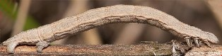

Белая бабочка Пяденица линейчатая
( Siona lineata )
Пяденица линейчатая отличается от Боярышницы опушкой по заднему краю крыла.
Гусеница (Уничтожающая сорняки) сфотографирована на той же полянке и на такой же травинке. Конечно, это (дальняя) родственница белой бабочки, но это вообще не личинка бабочки, а личинка мухи, похожей на осу. Ложная гусеница имеет ножки вдоль всего тела, а у гусениц бабочек ножки должны быть только впереди и сзади.
Гусеница Пяденицы серо-коричневая. Имеет ножки только впереди и сзади.

Автор фото: Владимиров Николай (insectamo.ru)